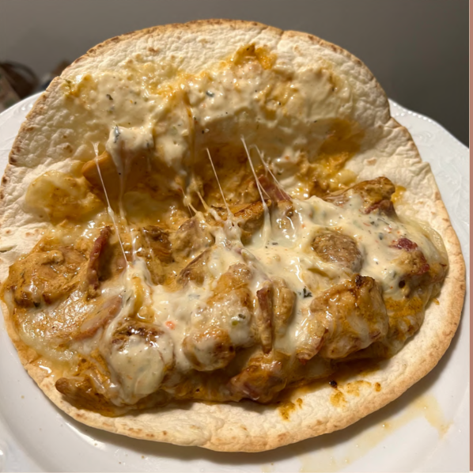

Chicken Bacon Ranch Quesadilla

NUTRITION FACTS
Per quesadilla (2)
440 Calories
39g Protein
36g Carbs
16g Fat
INGREDIENTS
- 8oz boneless skinless chicken thighs
- Season with: salt, garlic, onion, ranch
- 2 slices of bacon*
- 40g 2% greek yogurt
- 40g bolthouse ranch dressing
- 40g 2% mozzarella
- 2 burrito tortillas
INSTRUCTIONS
- Pre-heat oven to 400 degrees
- Place foil on a baking sheet, add bacon, and
place in oven for ~20 minutes. Halfway
through, remove, drain ALL grease, and flip.
Add back to oven to finish cooking. Once
done remove, drain grease, and place on
paper towerls to let cool/crips
- Chop chicken thighs, season, and add to a
pan over medium-high heat for 2-3 mins on
each side or until cooked through
- Add chopped chicken, bacon, greek yogurt
and ranch dressing to a bowl and mix until
combined